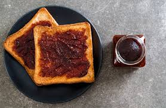
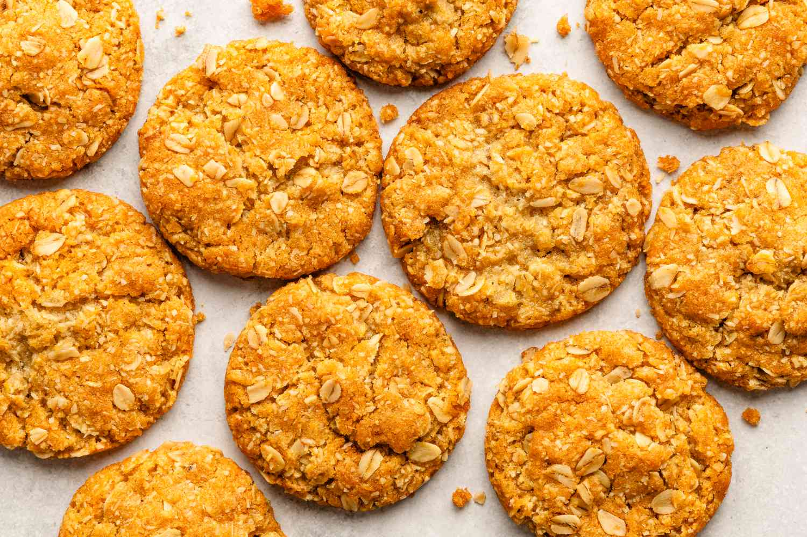
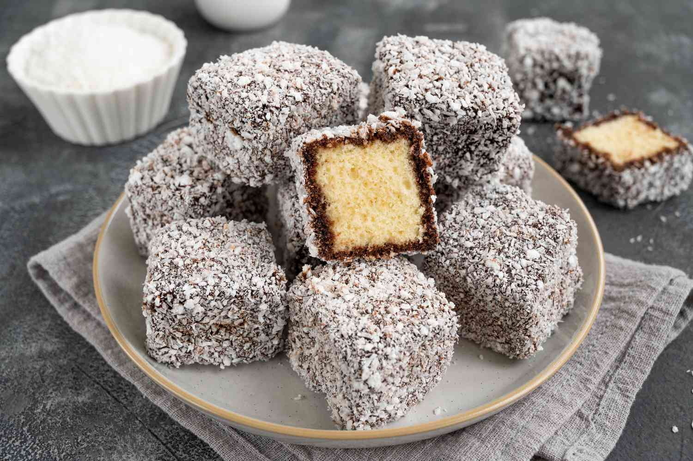
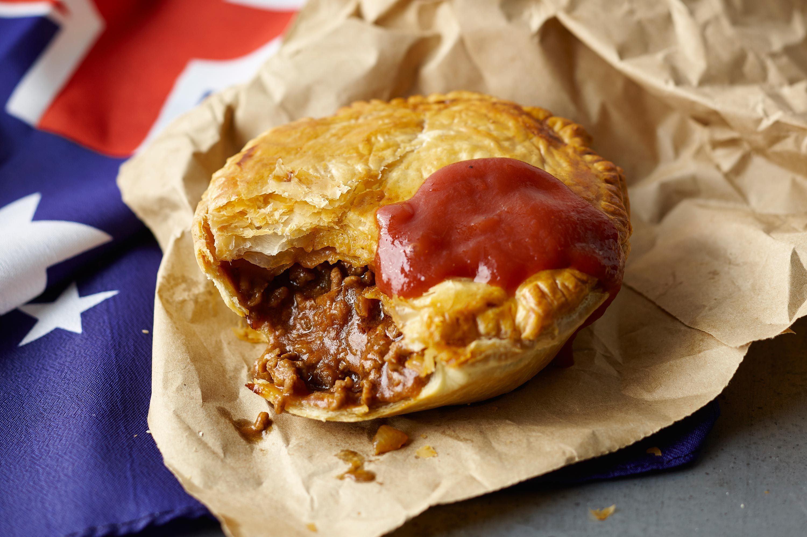
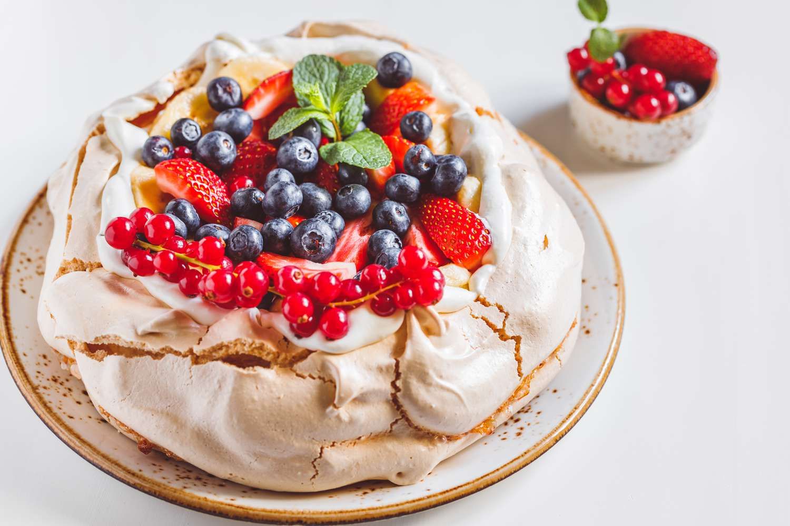

IKONIKVegemite Toast
Selai hitam ikonik berbasis ekstrak ragi dengan rasa asin dan gurih yang kuat. Biasanya dioleskan tipis di atas roti panggang mentega.
Pelajari Detail Makanan →
HISTORISAnzac Biscuits
Kue kering tradisional berbahan dasar gandum oat, kelapa parut, dan sirup emas yang dibuat untuk para tentara selama PD I.
Pelajari Detail Makanan →
MANISLamington Cake
Kue spons berbentuk kubus lembut tradisional yang dicelupkan ke lapisan saus cokelat cair dan taburan parutan kelapa kering.
Pelajari Detail Makanan →
GURIHAussie Meat Pie
Pai daging ukuran personal bertekstur renyah dengan isian cincang daging sapi dan kuah kaldu kental. Kudapan wajib saat menonton laga olahraga.
Pelajari Detail Makanan →
MANISPavlova Cake
Kue meringue renyah di luar namun lembut mirip marsmellow di dalam, disajikan dengan krim kocok melimpah dan potongan buah segar yang asam.
Pelajari Detail Makanan →Flat White Coffee
Kontribusi besar Australia bagi kultur kopi dunia. Paduan espresso pekat dengan susu beludru (microfoam) yang bertekstur sangat halus.
Pelajari Detail Minuman →